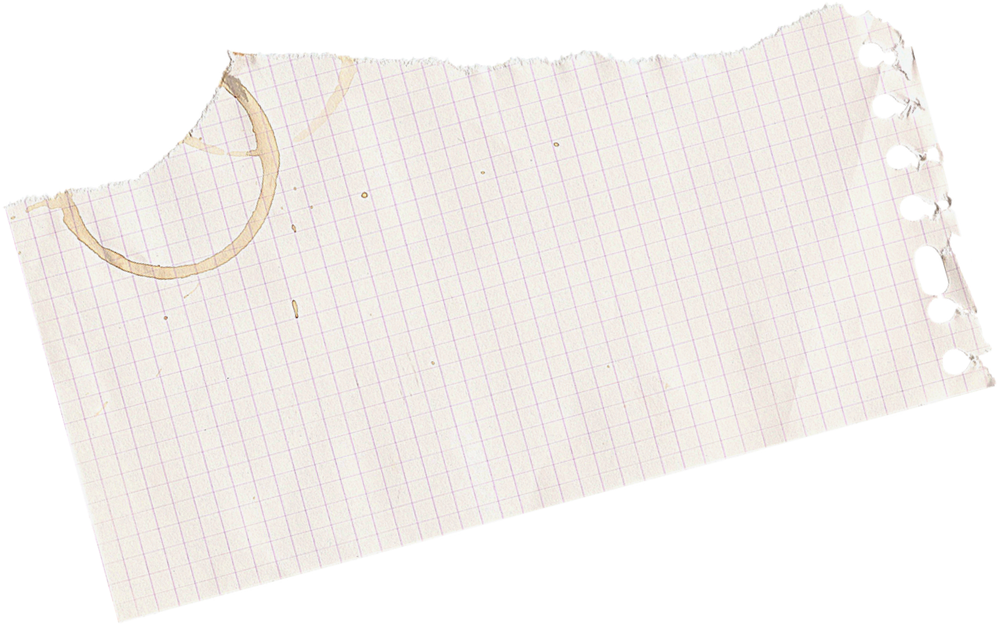
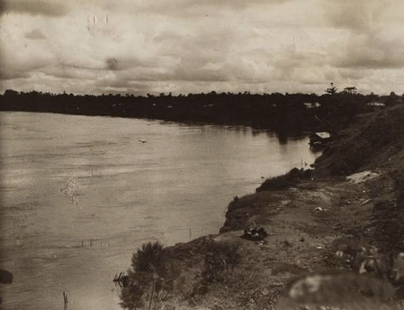
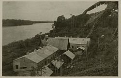
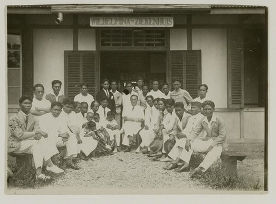
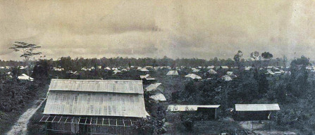
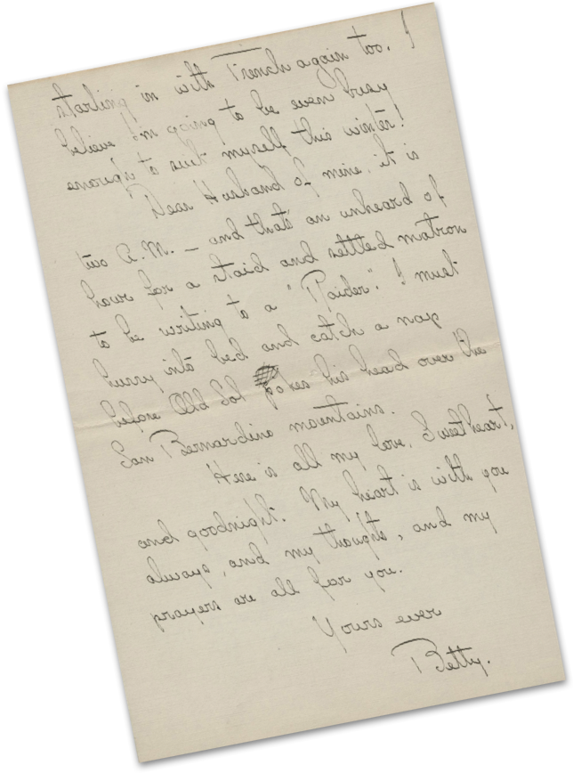
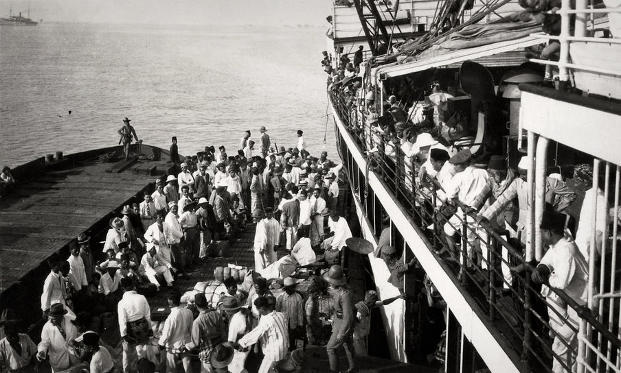
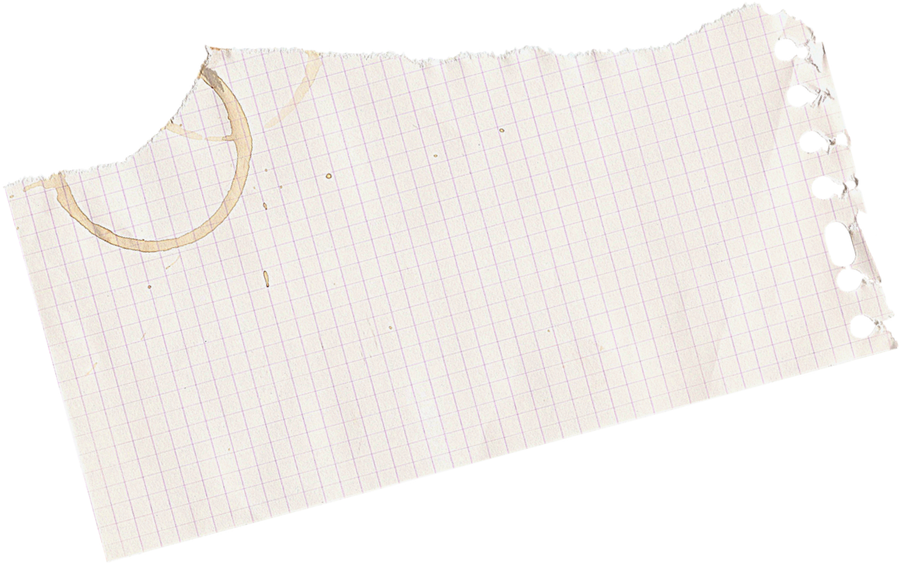
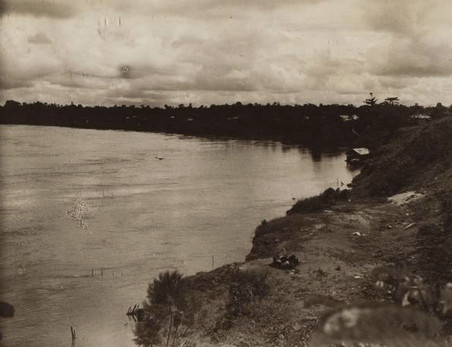
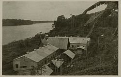
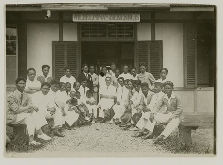
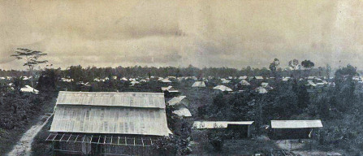
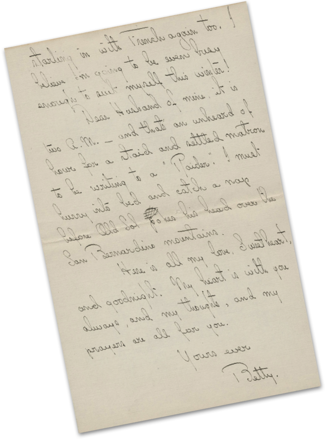
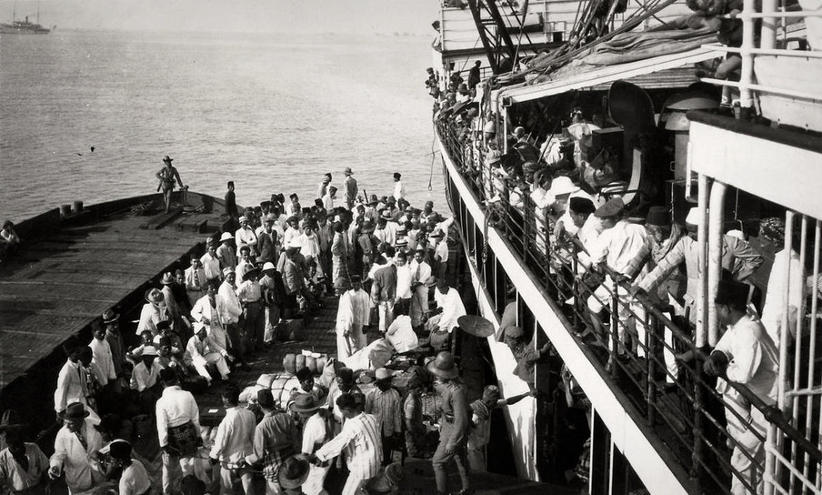
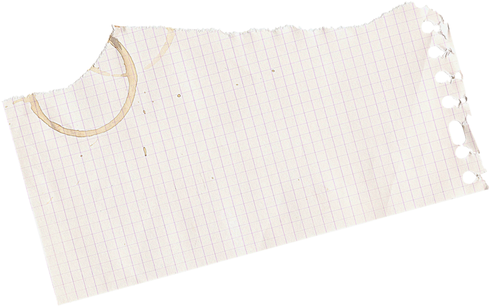
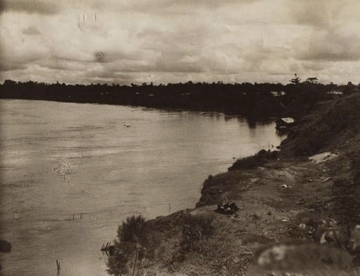
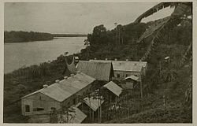
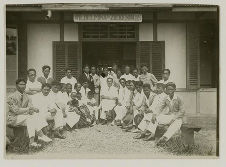
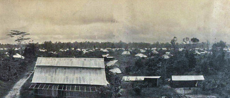
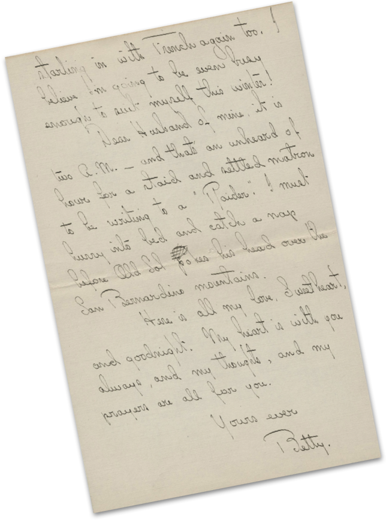
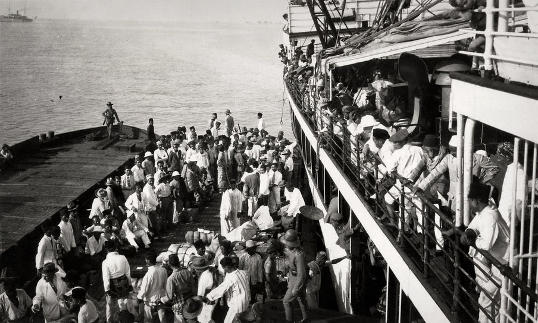
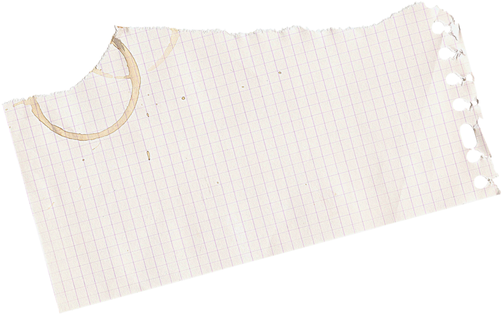
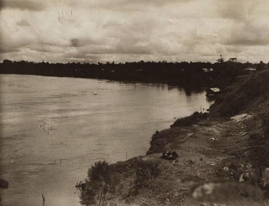
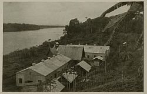
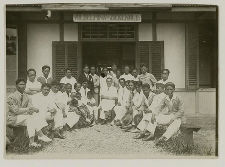
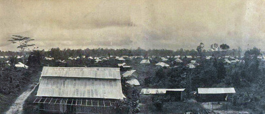
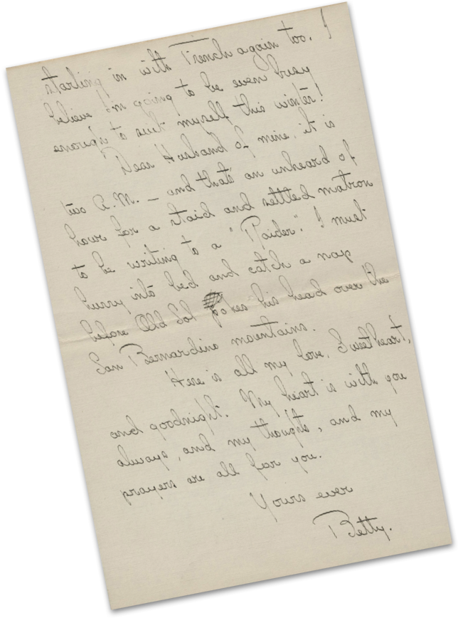
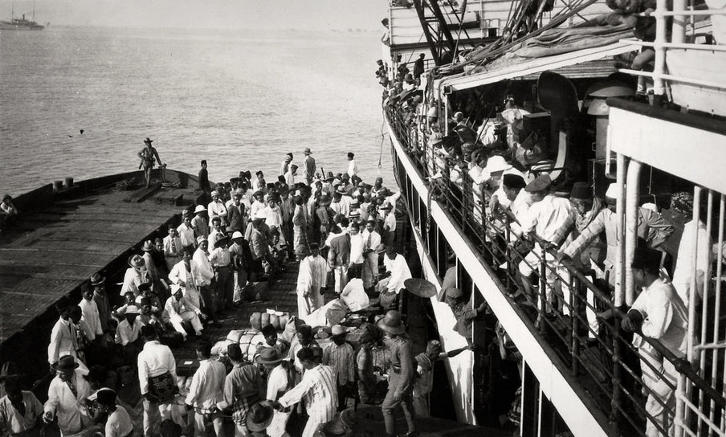
Hoe sterk de behoefte aan autonomie destijds was, bleek in 1926 en 1927 toen in Java en later West-Sumatra nationalisten en communisten in opstand kwamen tegen het koloniale bewind.
Van een goed georganiseerd verzet was geen sprake; de opstand beperkte zich tot fragmentarische rietbranden en sabotages. Maar de onrust maakte het koloniale gezag pijnlijk duidelijk dat het met 200.000 Nederlanders tegenover 60 miljoen Indonesiërs sterk in de minderheid was.
Met de rest – uiteindelijk 1.300 mannen en vrouwen – wist het koloniale gezag zich geen raad De paniek bij het gezag was zo groot, dat het in die jaren 13.000 mensen liet arresteren. Vaak was onduidelijk of zij überhaupt iets met het verzet te maken hadden gehad. Vier mensen werden ter dood veroordeeld en opgehangen.
Een deel, zo’n 4.500 mensen, werd schuldig bevonden aan samenzwering tegen de Nederlandse overheid, en veroordeeld tot een gevangenisstraf. Het grootste deel kwam na een paar maanden alsnog vrij.
Met de rest – zo’n 800 mannen en vrouwen, wat door latere arrestaties aangroeide tot 1.300 – wist het koloniale gezag zich geen raad. Bij deze mensen was er geen juridisch overtuigend bewijs dat ze iets strafbaars hadden gedaan, terwijl de autoriteiten er wel van overtuigd waren dat ze communistische of nationalistische sympathieën hadden.